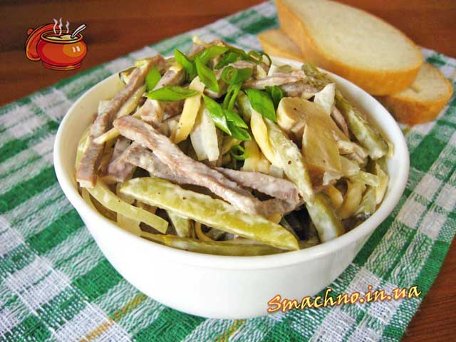
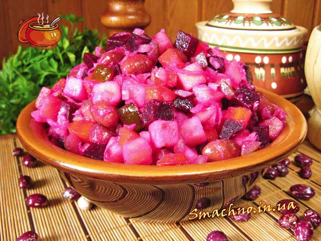
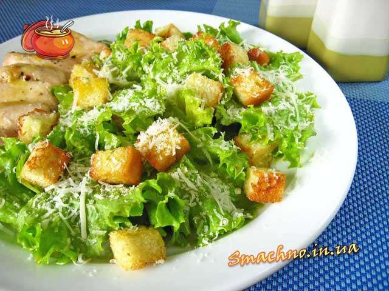
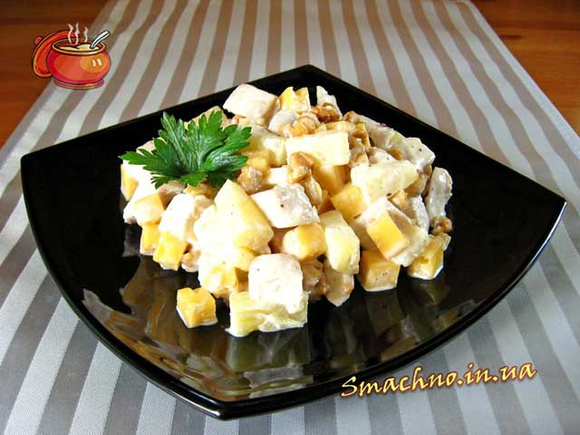

Салат з язика
Інгредієнти:
- язик яловичий варений - 400 г
- огірки мариновані - маса нетто 300 г
- печериці мариновані - маса нетто 270 г
- ріпчаста цибуля - 150 г
- твердий сир (в мене “Гауда”) - 100 г
-
приправи:
- майонез
- сіль
- чорний перець
Приготування:
Язик промити під проточною водою. Покласти в каструлю, залити холодною водою, на великому вогні довести до кипіння. Коли вода закипить, зняти піну, посолити, додати кілька горошин чорного перцю і варити, накривши кришкою, при слабкому кипінні 2 год. Потім язик вийняти з каструлі, потримати кілька хвилин в холодній воді і зняти шкірку.В посудину налити воду, додати сіль, цукор, оцет, перемішати. Викласти туди нарізану півкільцями цибулю, добре пом’яти рукою і залишити на 20 хв.
Огірки нарізати соломкою.Гриби нарізати плюстерками. Сир натерти на крупній терці. 400 г вареного язика нарізати соломкою. Всі інгредієнти: цибулю (її слід добре відтиснути від маринаду), огірки, гриби, язик, сир викласти в посудину, поперчити, трошки посолити. Заправити майонезом і перемішати. Салат з язика готовий. При подачі салат можна притрусити січеною зеленою цибулею.
Вінегрет
Інгредієнти:
- картопля - 400 г
- буряк - 300 г
- морква - 200 г
- ріпчаста цибуля - 150 г
- квашена капуста (без соку) - 200 г
- квашені огірки - 200 г
- червона квасоля - 2 / 3 склянки
- соняшникова олія
- сіль, чорний мелений перець
Приготування:
Квасолю відварити до готовності. Також зварити буряк. І окремо картоплю з морквою.Цибулю очистити, порізати дрібними кубиками. Картоплю очистити і порізати кубиками. Буряк очистити, порізати кубиками. Моркву очистити, порізати кубиками. Квашені огірки також порізати кубиками. Квашену капусту відтиснути від зайвої рідини. Буряк також в окремій посудині заправити олією, перемішати і викласти в посудину до всіх овочів, посолити, поперчити. Знову все ретельно перемішати. Вінегрет готовий.
Салат "Цезар"
Інгредієнти:
- салат (в мене латук) - 2 середні пучки
- сир “Пармезан” або “Грана Падано” - 70-80 г
- для грінок:
- батон або пшеничний хліб - 1 / 2 шт.
- оливкова олія - 3 ст. л.
- часник - 2 зубчики
- сіль
- для соусу:
- яйця - 2 шт.
- гірчиця (в мене міцна) - 1 ч. л.
- сік лимона - 1 ст. л.
- оливкова олія - 100 г
- вустерський соус (Worcestershire sause) - 1 / 2 ст. л.
- сіль, чорний мелений перець
Приготування:
Автором цього рецепту є американський повар італійського походження Цезар Кардіні, який був власником кількох ресторанів у місті Техуана, що знаходиться на території Мексики. За переказами, цей салат був створений 4-го липня 1924 року, в день незалежності США. Коли потрібно було нагодувати багато відвідувачів, а продуктів на кухні залишилось обмаль і поповнити запаси теж не було змоги, Кардіні вирішив приготувати страву з того, що було під рукою (пшеничний хліб, салат “Ромен”, сир “Пармезан”, оливкова олія, яйця, часник, вустерський соус, лимонний сік і гірчиця). Так виник відомий у всьому світі салат “Цезар”.
Оскільки в класичному варіанті цей салат виходить досить легким, то для ситності до нього часто додають смажені креветки, курку, індичку, бекон, варені яйця, помідори і ін. Я також інколи додаю смажену на оливковій олії курку чи бекон, але не вимішую їх зі салатом, а викладаю збоку.
Готуємо крутони (грінки). В невелику посудину налити 3 ст. л. оливкової олії. До олії витиснути через часникодавку 2 зубчики часника, посолити, розмішати і залишити на 10-15 хв. Батон чи хліб порізати кубиками зі стороною 1 см. Підготовлену оливкову олію вилити на розігріту сковорідку (часник поки що не додавати) і на середньому вогні підсмажити на ній порізаний батон, періодично помішуючи. Коли крутони достатньо зарум’яняться, викласти в сковорідку часник і, постійно помішуючи, посмажити ще 20-30 секунд. Відставити з вогню. Крутони готові.
Готуємо соус “Цезар”. Яйця опустити в киплячу воду і кип’ятити 1 хв. Яйця повинні бути кімнатної температури, тому слід заздалегідь їх вийняти з холодильника, щоб вони прогрілись. В окрему посудину налити олію, лимонний сік і додати гірчицю. Потім додати яйця (білки з жовтками), вустерський соус, посолити і поперчити. Все збити вінчиком чи міксером. Соус готовий.
Листя салату добре промити, обсушити і порвати руками. До листя додати половину соусу, перемішати. Сир натерти на дрібній терці. Заправлені соусом листя салату викласти в порційні тарілки. На листя салату викласти крутони і полити соусом, що залишився. Зверху присипати тертим “Пармезаном”. Салат “Цезар” готовий.
Салат з куркою, ананасом і горіхами
Інгредієнти:
- куряче філе - 250 г
- консервований ананас - 150-200 г (без рідини)
- грецький горіх - 50 г
- твердий сир - 100 г
- майонез, сіль, перець - за смаком
Приготування:
Ананас порізати невеликими шматками. Куряче філе відварити в підсоленій воді, остудити і порізати невеликими кубиками. Горіхи подрібнити ножем. Сир нарізати кубиками. Всі інгредієнти (куряче філе, сир, горіхи, ананас) викласти в посудину, поперчити і посолити за смаком. Потім додати майонез і все перемішати. Салат з куркою, ананасом і горіхами готовий.